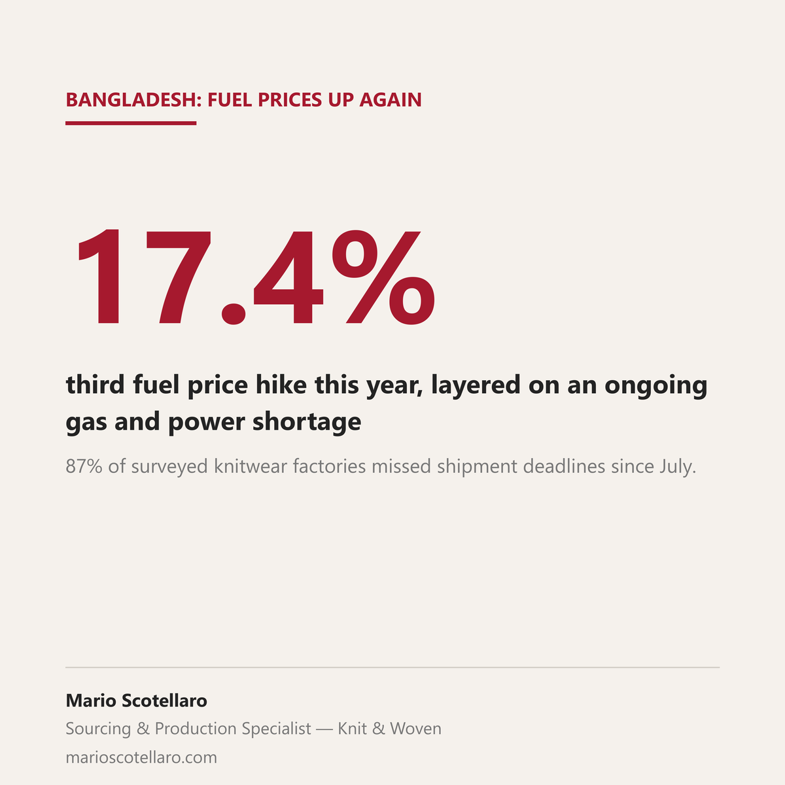

Bangladesh's garment sector has been running a gas and power shortage since July. A BKMEA survey of 134 knitwear factories, taken between late July and early September, found 87% had missed shipment deadlines, 55% had orders cancelled or reduced by buyers, and 78% had partially halted production.
On top of that, the government has raised fuel prices three times this year, most recently by up to 17.4% on 21 September, with diesel now at 135 taka a litre. The Energy Ministry points to international fuel prices more than doubling since March and higher shipping costs tied to the regional conflict; the state oil company had lost $1.9 billion between March and August.
What this looks like on the ground varies a lot by factory. One supplier to major US and European brands, which has run its own solar and gas generation since 2019 specifically to avoid this kind of exposure, still saw production costs rise 2 to 3%, adding $40,950 a month to its fuel bill, and that was before the latest hike. Most factories don't have that kind of buffer. On the buyer side, one exporter said a Canadian order expected at 25,000 pieces came in at 8,000, tied to buyer confidence about the disruptions rather than price.
Two real, verified signals, no reliable industry-wide number for what this adds to cost yet. Worth watching directly with whoever you're sourcing from in Bangladesh this quarter, rather than assuming it nets out to nothing.
Sources: The Business Standard (Reuters), 22 September 2026 · Business Recorder, 21 September 2026